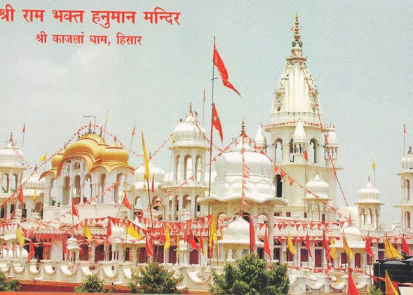

मंदिर के बारे में :-
यह मंदिर हनुमानगढ़ से 175 किलोमीटर की दूरी पर स्थित - हिसार रोड पर प्रह्लाद से आगे उडियान सर स्टेशन से 8 किलोमीटर व भादरा शहर से 12 किलोमीटर शाजदपुर सिरसा से 20 किलोमीटर के बीच स्थित श्रीराम की सच्ची बाल सेवा है।
भगवान "श्री हनुमान महाराज" को विश्व-स्तरीय गुरु ज्ञान वाले श्री गुरु जी महाराज की शरण में रहकर श्रीराम की भक्ति का कोई भी समस्या जैसे संताप (सुख, समृद्धि, धन, विद्या, स्वास्थ्य, उद्देश्य, उपयुक्त स्थिति) से ही नाश "स्वयं का हुक्म" में श्री हनुमानजी महाराज की कृपा से कोई भी प्राप्त की जा सकती है।
इस मंदिर का महत्व न केवल हमारे भव्य मंदिर की सुंदरता है। यह मंदिर कजला वाली की धूल से अलंकृत है। यहाँ श्री राम जी और हनुमान महाराज स्वयं विराजमान रहकर आते हुए भक्तों के धार्मिक, दैहिक और भौतिक तापों का उपचार करते हैं।
प्रेरणा स्त्रोत (श्रद्धेय ब्रह्मलीन ) पूज्य श्री रमेश कुमार जी जोशी
गुरु जी महाराज श्री काजलां धाम (हिसार)
गुरु माता श्रीमती मनु जी जोशी
श्री काजलां धाम (हिसार)

प्रेरणा स्रोत भाईजी श्री अंजनी कुमार जी जोशी
गुरु जी महाराज श्री काजलां धाम (हिसार)